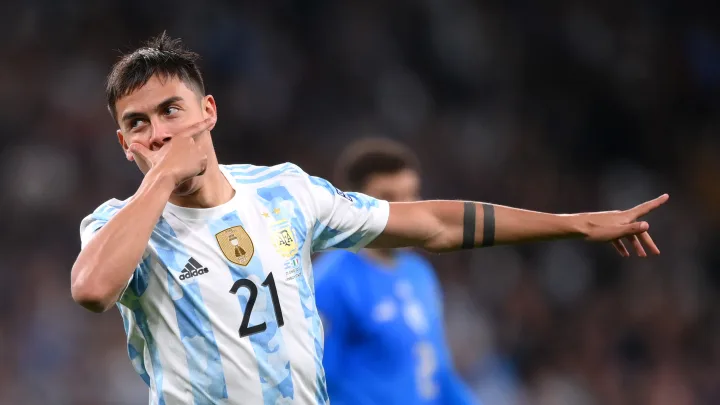
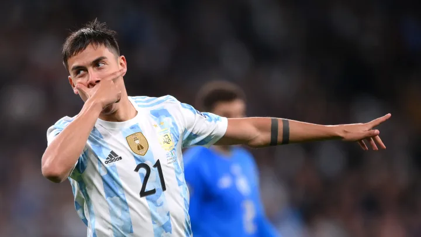

Dybala: Argentina
 

Dopo le convocazioni, senza presenze, da parte dell'Under-17 e dell'Under-20 argentina,[36][97][98] nel settembre del 2015 viene chiamato in nazionale maggiore.[99] Le origini del giocatore, polacche e italiane, avrebbero permesso anche le chiamate dalla Polonia oppure dall'Italia, difatti, da quest'ultima, durante gli esordi nel Palermo, nel 2014-2015, aveva ricevuto una proposta di convocazione in azzurro da parte dell'allora CT Antonio Conte[100]: tuttavia, Dybala stesso, in seguito a un'attenta riflessione con i suoi amici e familiari, declinò tali possibilità.[99][101] Esordisce il 13 ottobre dello stesso anno, nel pareggio 0-0 ottenuto contro il Paraguay, in una gara valida per le qualificazioni ai Mondiali 2018.[102] La prima marcatura in nazionale avviene il 20 novembre 2018, nell'amichevole casalinga finita 2-0 contro il Messico, ove, subentrato all'81' a Mauro Icardi, su assist di Giovanni Simeone, pone il sigillo alla partita all'87',[103] mentre il primo gol in una partita ufficiale con l'Albiceleste arriva il 6 luglio 2019, nel match valevole per il 3º posto finale nella Copa América, vinto per 2-1 ai danni del Cile. Nell'agosto 2021, dopo due anni di assenza, viene richiamato dal CT Lionel Scaloni per le partite di qualificazione ai mondiali 2022 del mese successivo.[104] Il 1º giugno 2022 viene convocato per la Finalissima di Coppa dei Campioni CONMEBOL-UEFA, disputatasi a Wembley; nell'occasione, subentra dalla panchina e mette a segno il proprio terzo gol con la maglia albiceleste, fissando il risultato sul 3 a 0 che determina la vittoria dell'Argentina contro l'Italia. Nel novembre del 2022 viene inserito dal CT Lionel Scaloni nella rosa partecipante ai Mondiali di calcio in Qatar.[105] Impiegato precedentemente unicamente nella semifinale contro la Croazia,[106] risulta decisivo nella finale vinta ai tiri di rigore contro la Francia, entrando in campo alla fine dei tempi supplementari e trasformando con successo il proprio tentativo dal dischetto.[107]